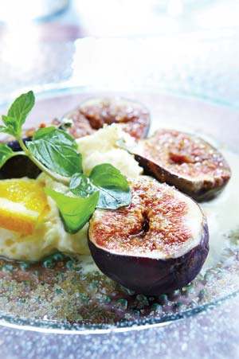
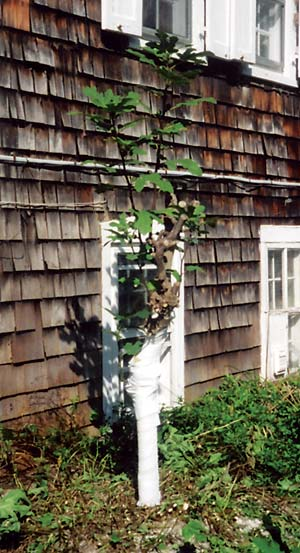
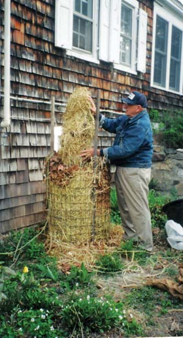

When I told my father, an Italian immigrant who had fig trees on his farm in Italy, that I was going to raise fig trees in my Zone 6 Connecticut backyard, he said, “Ma sei pazzo?” (Are you crazy?)
He pointed out that the cool climate in southwest Connecticut is not like the warm weather of Mediterranean countries where fig trees thrive. However, with a little effort and know-how, I am able to harvest delicious, honey-flavored figs. Here’s how you can, too.
About 15 years ago, I planted three fig tree shoots on the south side of our farmhouse in holes wide enough to accommodate the spread of the roots. The farmhouse blocked the north wind in the winter and reflected heat and light in the summer. Fig trees love lime, my father said, so I added pulverized limestone at the base of each shoot.
After that, I needed patience, because it takes three years before one can harvest figs. But now, each July, pear-shaped figs appear in the crotches of the branches, and in September we are eating tasty figs.
“Sono deliciosi” (they are delicious), Father says. I smile and say, “Sì.”
In late fall, before the first frost and when the figs are not ripening quickly enough, I apply an Italian trick: I coat the underside of each fig with olive oil; this expedites ripening.
When the first frost arrives, the leaves drop to the ground. This is the time to bundle the fig tree for winter. Prune back the tree to about 6 feet and remove lateral branches that protrude. Wrap the main trunk with protective tape (available at your local garden supply store), then place handfuls of hay around the trunk and secure with twine.
Using tomato stakes for support, wrap wire fencing around the hay-bundled tree, and stuff leaves into the wire enclosure to the top of the tree. Next, wrap burlap around the outside of the wire. At the bottom, wrap tar paper around the whole enclosure and tie with twine.
Place a plastic container on top of all this as a cap to protect the top of the tree package from moisture. Finally, enclose the whole package with a sheet of plastic and secure with twine. It’s safe to remove the winter wrap after the last average spring frost date in your locale.
In October, when the figs are ripe and most abundant, we celebrate “la Festa dei Fichi” (the fig feast). We have Italian bread, provolone cheese, prosciutto di Parma and, of course, figs. As we raise our glasses of homemade wine, we chorus, “Viva i fichi!” (Long live figs!)
|
 ISTOCKPHOTO.COM Fresh figs are a tasty treat eaten out of hand or with mascarpone, a rich cow’s-milk cheese. |
 ALDO BIAGIOTTI With some cold-weather protection, fig trees can be grown even in northern regions. |
 ALDO BIAGIOTTI With some cold-weather protection, fig trees can be grown even in northern regions. |